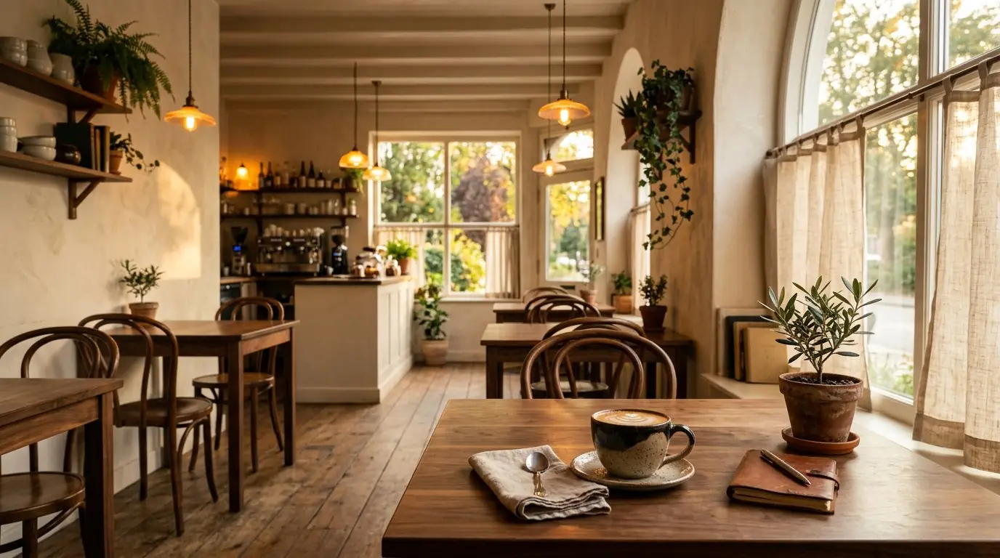
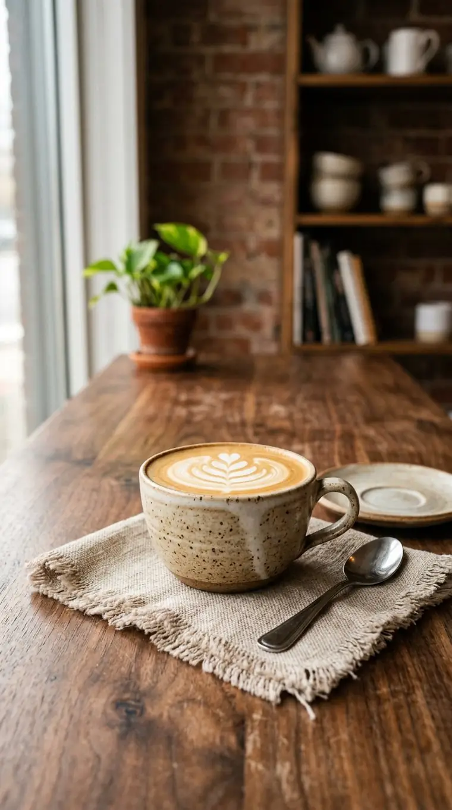
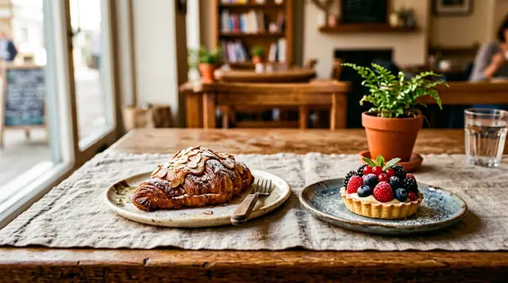

YOUR NEIGHBORHOOD PAUSE
A little room
to slow down.
Warm cups, unhurried conversations, and something delicious waiting around the corner.
WELCOME TO MORROW
Come as you are.
Stay a little longer.
Some places make you feel at home before you’ve even found a seat. That’s the feeling we’re after: good coffee, familiar faces, and a moment that belongs entirely to you.
A little more about us
MADE FOR THE MOMENT
Something good
is brewing.
From your first sip to the last crumb, every little thing is made to make your day feel brighter.
See what's on the menuSLOW DOWN A LITTLE
Some moments
are worth staying for.
Let the world rush by. Here, there’s always time for one more sip, one more story, and something wonderful in between.
Discover our story

Here’s to the kind of day
you wish could last a little longer.
WE'LL SAVE YOU A SEAT
Find your way
to Morrow.
Whether you have five minutes or a whole afternoon, there’s always room for you here.
Plan your visit